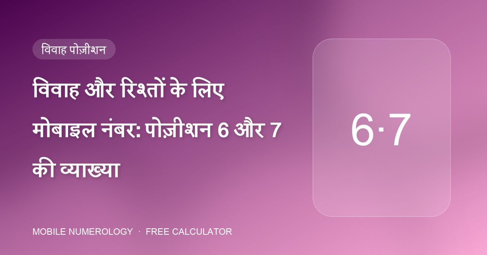
मोबाइल नंबर
विवाह और रिश्तों के लिए मोबाइल नंबर: पोज़ीशन 6 और 7 की व्याख्या
आपके फ़ोन नंबर के बीच के दो अंक आपके प्रेम जीवन का वर्णन करते हैं। उनमें से एक मदद कर सकता है; कई नुकसान पहुँचा सकते हैं।
एडवांस मोबाइल न्यूमरोलॉजी क्लास से लिए गए व्यावहारिक गाइड: अपने फ़ोन नंबर का हर अंक कैसे पढ़ें, शुभ पिन और पासवर्ड कैसे चुनें, और अपनी जन्मतिथि के अनुसार वॉलपेपर, कवर और रंग कैसे मिलाएँ।

आपके फ़ोन नंबर के बीच के दो अंक आपके प्रेम जीवन का वर्णन करते हैं। उनमें से एक मदद कर सकता है; कई नुकसान पहुँचा सकते हैं।

व्यापारिक लाइन के लिए अंतिम तीन अंक अधिकांश काम करते हैं। यहाँ ठीक वही है जो वहाँ रखना है — और क्या बाहर रखना है।
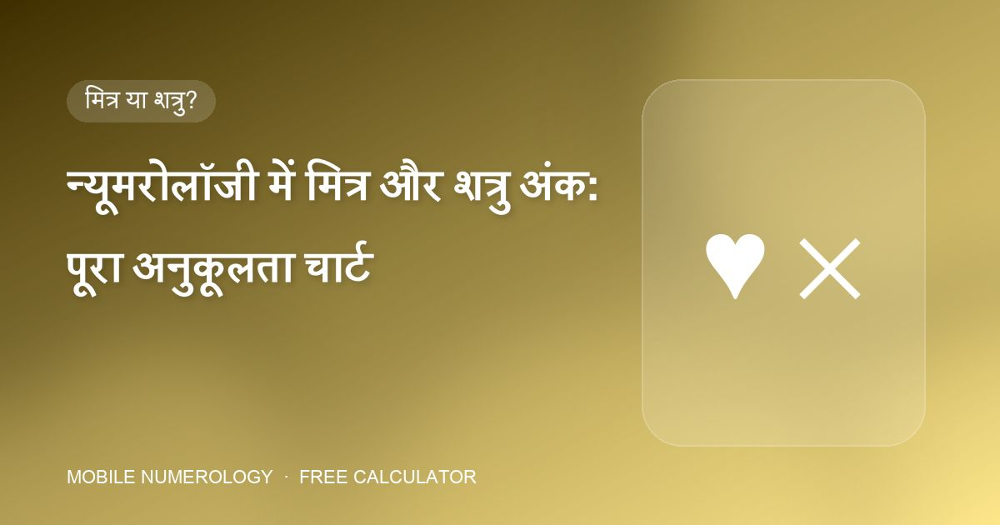
मोबाइल न्यूमरोलॉजी की हर सिफ़ारिश एक सवाल पर लौटती है: क्या यह अंक आपका मित्र है, शत्रु है या तटस्थ?
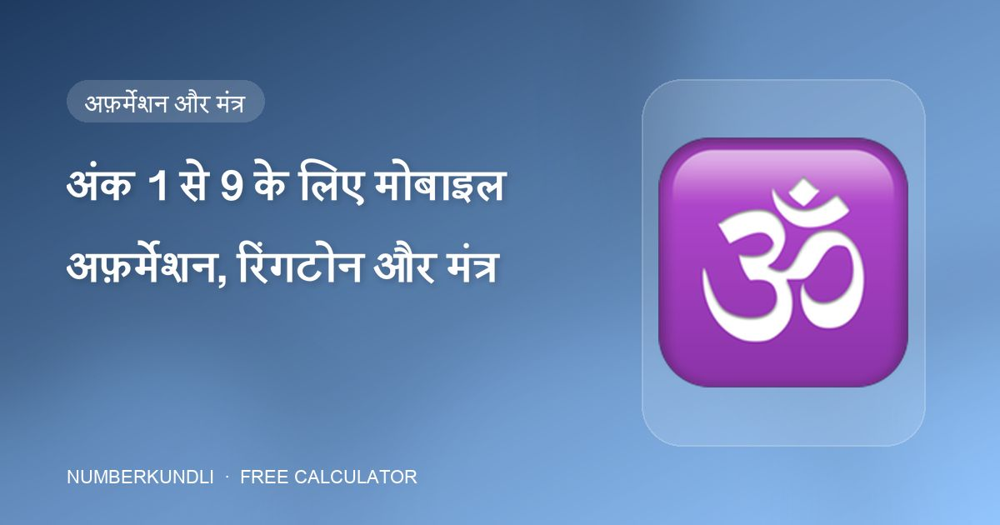
हर कॉल एक छोटी घटना है। क्लास हर अंक को दो अफ़र्मेशन, एक रिंगटोन शैली और एक ग्रह मंत्र से जोड़ती है ताकि माहौल तय हो।
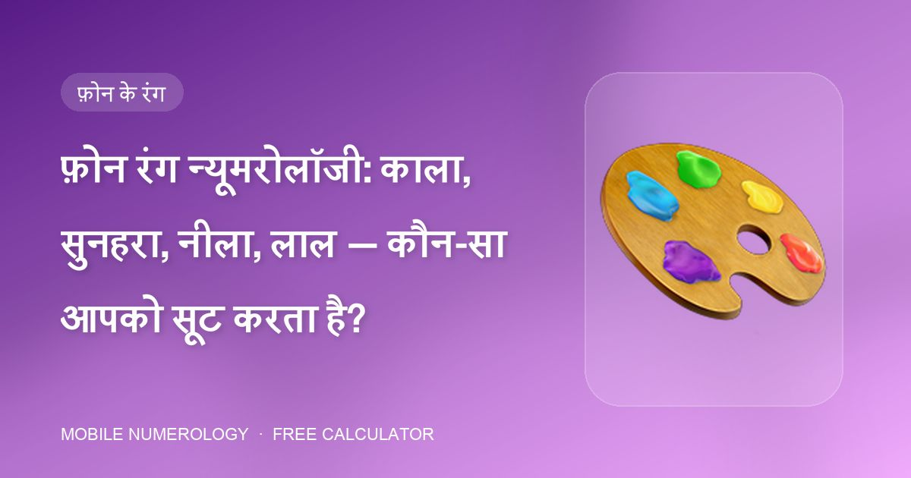
अनुशासन के लिए काला, अधिकार के लिए सुनहरा, व्यापार के लिए हरा, अंतर्ज्ञान के लिए बैंगनी — आपके फ़ोन का रंग एक ग्रह की दैनिक खुराक है।
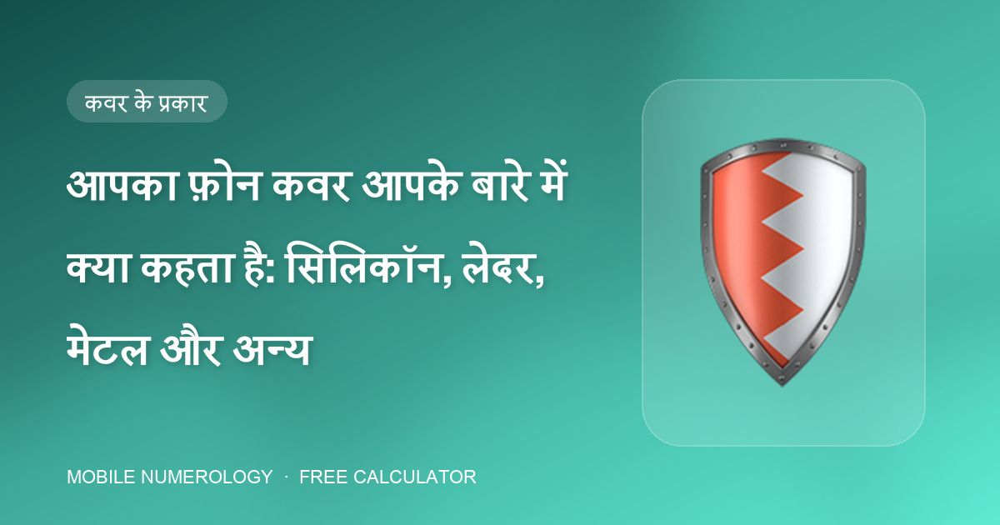
जो केस आप अपने फ़ोन की सुरक्षा के लिए चुनते हैं वह चुपचाप बताता है कि आप खुद की रक्षा कैसे करते हैं। न्यूमरोलॉजी नौ कवर प्रकारों को मूलांकों से मिलाती है।
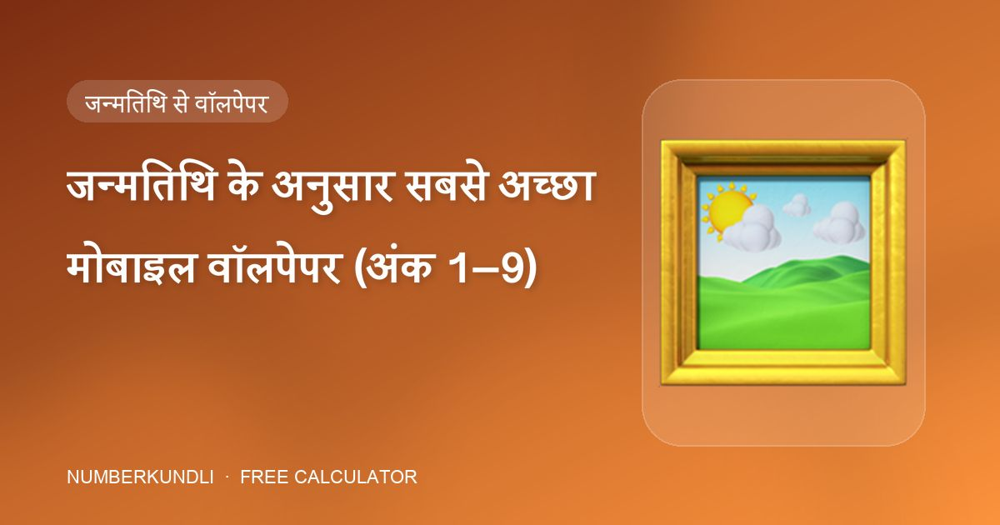
1 के लिए उगता सूरज, 2 के लिए पूर्ण चंद्रमा, 6 के लिए लक्ष्मी, 9 के लिए हनुमान — हर अंक की ऐसी छवि है जो उसके ग्रह से मेल खाती है।
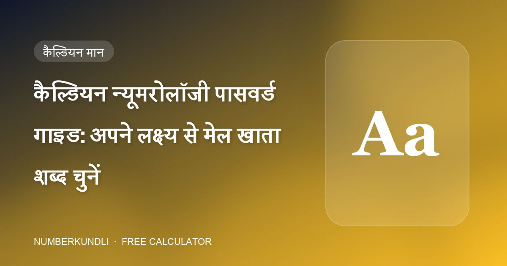
GANESHJI का योग 6 है। LAXMI का योग 5। कैल्डियन न्यूमरोलॉजी में पासवर्ड एक शब्द है जिसके भीतर एक अंक है — और वह अंक जानबूझकर चुना जा सकता है।

आप दिन में दर्जनों बार अपना फ़ोन पिन टाइप करते हैं। न्यूमरोलॉजी इसे एक छोटा दैनिक अनुष्ठान मानती है — इसलिए अंक सोच-समझकर चुनें।
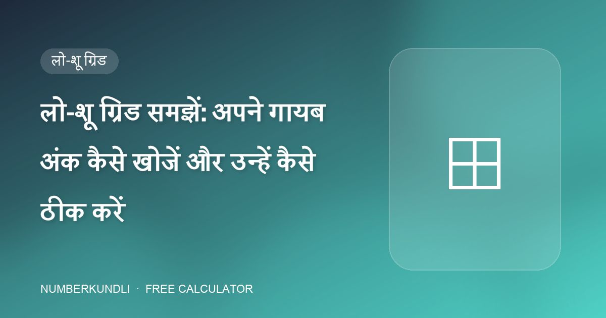
नौ खाने, एक जन्मतिथि। लो-शू ग्रिड एक नज़र में दिखाता है कि आप किन ऊर्जाओं के साथ जन्मे — और किन्हें जोड़ना है।
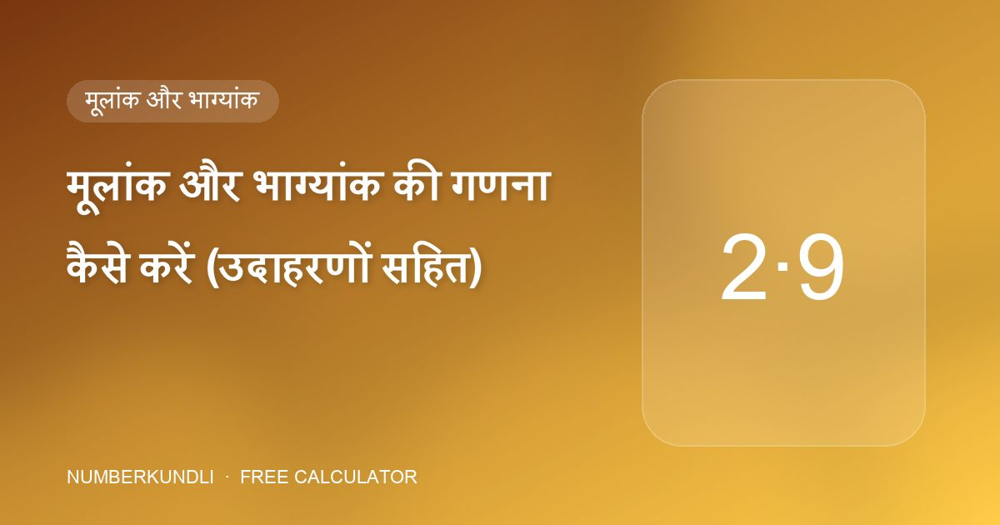
मोबाइल न्यूमरोलॉजी की हर सिफ़ारिश दो अंकों से चलती है। दोनों आपकी जन्मतिथि से आते हैं और एक मिनट से कम में निकल आते हैं।
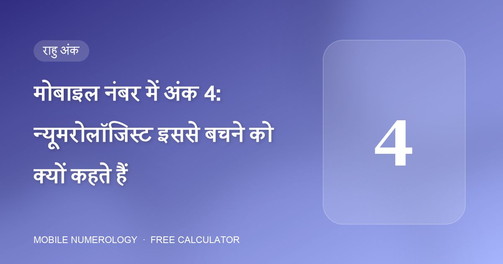
क्लास सामग्री एक अंक के बारे में असामान्य रूप से स्पष्ट है: "मोबाइल फ़ोन में 4 अंक से बचें।" यहाँ कारण है।

8 शनि का अंक है: कर्म, परिश्रम और विलंब। फ़ोन नंबर की गलत पोज़ीशन में यह धन और रिश्तों को खींचने वाला बन जाता है।

यदि आप अपने फ़ोन नंबर के अंतिम अंक चुन सकें, तो न्यूमरोलॉजी की स्पष्ट पसंद है: 55 या 555।
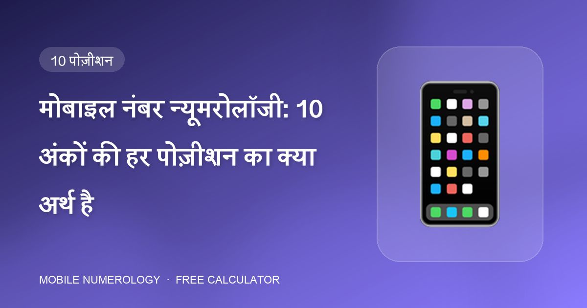
आपका मोबाइल नंबर केवल अंकों की एक शृंखला नहीं है। मोबाइल न्यूमरोलॉजी में हर पोज़ीशन — पहले अंक से आख़िरी तक — जीवन के एक विशेष क्षेत्र पर राज करती है।